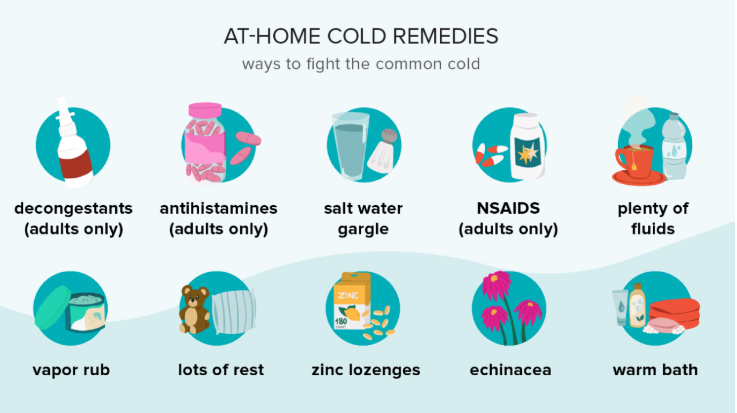

The common cold is a viral infection that affects the upper respiratory tract. The most common cause is a rhinovirus, and the most common symptoms are a stuffy or runny nose, sneezing, and a scratchy, sore throat.

What are the symptoms of a common cold?
Common cold symptoms appear about one to three days after the body becomes infected witha cold virus.
The short period before symptoms appear is called the “incubation” period.Symptoms are frequently
gone in seven to 10Trusted Source days, although they can last from two to 14 days.
Runny nose or nasal congestion
A runny nose or nasal congestion (stuffy nose) are two of the most common symptoms of a cold. These
symptoms result when excess fluid causes blood vessels and mucous membranes within the nose to swell.
Within three days, nasal discharge tends to become thicker and yellow or green in color. According to
the Centers for Disease Control and Prevention (CDC), these types of nasal discharge are normal.Someone
with a cold also may have postnasal drip, where mucus travels from the nose down to the throat.
These nasal symptoms are common with colds. However, call your doctor if they last more than 10 days,
you begin to have yellow/green nasal discharge, or a severe headache or sinus pain, as you may have
developed a sinus infection (called sinusitis).
Sneezing
Sneezing is triggered when the mucous membranes of the nose and throat are irritated. When a cold virus
infects nasal cells, the body releases its own natural inflammatory mediators, such as histamine. When
released, inflammatory mediators cause the blood vessels to dilate and leak, and the mucus glands
secrete fluid. This leads to the irritation that causes sneezing.
Cough
A dry cough or one that brings up mucus, known as a wet or productive cough, can accompany a cold. Coughs tend to be the last cold-related symptom to go away and they can last from one to three weeks. Contact your doctor if coughinglasts several days.
Sore throat
A sore throat feels dry, itchy, and scratchy, makes swallowing painful, and can even make eating solid food difficult. A sore throat can be caused by inflamed tissues brought on by a cold virus. It can also be caused by postnasal drip or even something as simple as prolonged exposure to a hot, dry environment.
Mild headaches and body aches
In some cases, a cold virus can cause slight all-over body aches, or headache. These symptoms are more common with the flu.
Fever
A low-grade fever may occur in those with a common cold. If you or your child (6 weeks and older) has a fever of 100.4°F or higher, contact your doctor. If your child is younger than 3 months and has a fever of any kind, the CDCTrusted Source recommends calling your doctor.
Other symptoms that may occur in those with a common cold include watery eyes and mild fatigue.
How to treat a cold ?
Because a cold is a viral infection, antibiotics are not effective at treating it.
However, over-the-counter medications, such as antihistamines, decongestants, acetaminophen,
and NSAIDs, can relieve congestion, aches, and other cold symptoms. Drink plenty of fluids to
avoid dehydration.
Some people take natural remedies, such as zinc, vitamin C, or echinacea, to prevent or relieve
cold symptoms. The evidence is mixed on whether they work
Vitamin C doesn’t seem to prevent colds, but if you take it consistently, it might lessen your symptoms,
according to a 2013 Cochrane review. Echinacea hasn’t been shownTrusted Source to help prevent or
treat colds. A 2017 studyTrusted Source in BMJ found vitamin D helps protect against both colds and flu.
Colds usually clear up within 7 to 10 days. See a doctor if:
- your cold hasn’t improved in about a week
- you start to run a high fever
- your fever doesn’t go down
Treatment for adults

The common cold is a viral infection in your upper respiratory tract. Viruses cannot be treated with
antibiotics. In most cases, viruses like the cold just need to run their course. You can treat the
symptoms of the infection, but you can’t actually treat the infection itself.
Cold treatments generally fall into two main categories: over-the-counter (OTC) medications and
home remedies.
How to protect yourself from a cold
Uncomplicated colds are a minor illness, but they’re inconvenient and can certainly make you feel miserable.
You can’t get a vaccine to prevent colds. But you can do a few key things during cold season to help you avoid picking up a cold virus.
Tips for cold prevention
- Washing your hands with soap and water is the best way to stop the spread of germs.
- Use alcohol-based hand sanitizer gels and sprays as a last resort when you can’t get to a sink.
- Avoid sick people,If you notice someone isn’t feeling well, go out of your way to avoid them. Be sure to wash your hands if you come into contact with them.
- Don‘t touch your face. Cold viruses can live on your body without making you sick, but once you touch your mouth, nose, or eyes with infected hands, you’ll likely get sick.